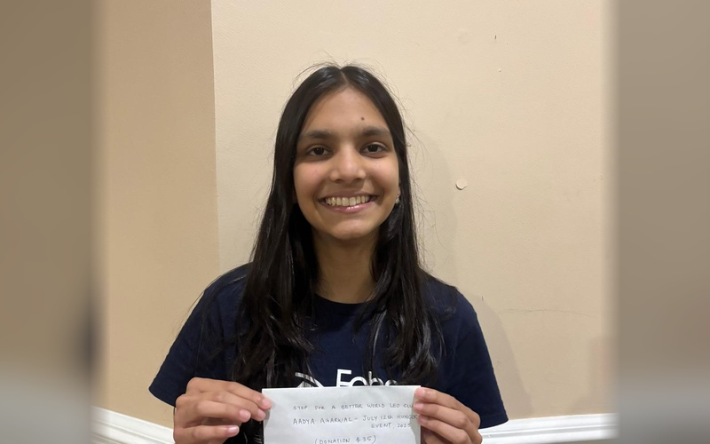
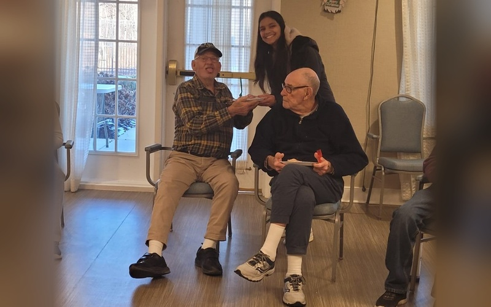

Memberships & Community Service
Professional societies, scientific research cohorts, and grassroots community service initiatives where Aadya actively leads, innovates, and serves communities.
Organizations & Leadership Cohorts
Continuous scroll of organizations, leadership programs, and professional cohorts where Aadya actively contributes.
Community Social Service Initiatives
Over 100+ hours of hands-on civic service, seasonal donation drives, youth empowerment, shelter meal distributions, and elder care volunteering across New Jersey and beyond.

Winter Sock Drive with NJ State Assembly
Delivering collected warm clothing and winter essentials to community partners in collaboration with NJ Assembly leadership.

NJ State Senate & Assembly Delegation
Winter drive coordination with state legislators at the State House for regional shelter distribution.

NJ State Assembly Citation for Service
Official Legislative Resolution recognizing exemplary dedication to youth empowerment, environmental stewardship, and community action.

United Nations Future of Service Forum
Recognized at the United Nations platform for youth-led healthcare access and ecological sustainability initiatives.

STEP Meals Packaging for Families
Leading student volunteer cohorts in assembling and sealing thousands of nutritious shelf-stable meals.

Howard Healthy Choices Center Distribution
On-site distribution of seasonal donations and healthy treat packages to underserved youth and families.

Anchor House Youth Shelter Distribution
Delivering care packages, snacks, and holiday kits directly to Anchor House youth shelter residents.

Sorting & Packaging Volunteer Hub
Directing volunteers in weighing, inspecting, and packaging hundreds of pounds of collected items.

AoPS Campus Donation Station
Collection points established across Art of Problem Solving campuses to mobilize youth donors.

Community Drop-off Boxes
Custom decorated collection boxes placed across local schools, learning centers, and libraries.

Volunteer Assembly Line Coordination
Coordinating volunteer teams boxing sorted donations for immediate shelter delivery.

Anchor House Volunteer Team
Group photo with community partners and student volunteers following a major distribution milestone.

Pallets of Packaged Donations
Dozens of sorted and sealed donation parcels ready for vehicle dispatch.

AoPS Youth Mobilization
Mobilizing middle and high school students to participate actively in community drives.

Senior Citizen Center Outreach
Dedicated service and companionship visits with memory-care and assisted living senior residents.

Senior Cognitive Engagement & Arts
Conducting interactive music listening and art therapy sessions for senior community members.

Senior Center Smiles & Care
Building lasting intergenerational bonds and sharing comforting moments with senior residents.

Animal Shelter - Paws for Reading
Volunteering with animal rescue organizations and reading to shelter pets to aid emotional recovery.

Hurricane Helene Disaster Relief
Coordinating emergency supply donations in partnership with West Windsor Police Department.

Back-to-School Supply Drive
Equipping underprivileged elementary students with full backpacks and essential STEM supplies.

Melvin Jones Lions Philanthropy
Organizing philanthropic community campaigns supporting blindness prevention and pediatric wellness.
.jpg)
Community Laptop Drive
Collecting, refurbishing, and redistributing functional computers to students lacking digital access.

AWD Foundation Global Outreach
Youth fundraising campaigns aiding rural healthcare camps and medical diagnostic equipment.

Annual Hunger Relief Operation
Commemorative showcase of Aadya's multi-year food and necessity distribution efforts across the region.

Senior Center Wellbeing Program
Framed showcase highlighting therapeutic interaction and MoniVitals wellness initiatives.

Loading & Dispatch Logistics
Loading student family vehicles to transport collected goods directly to local distribution hubs.